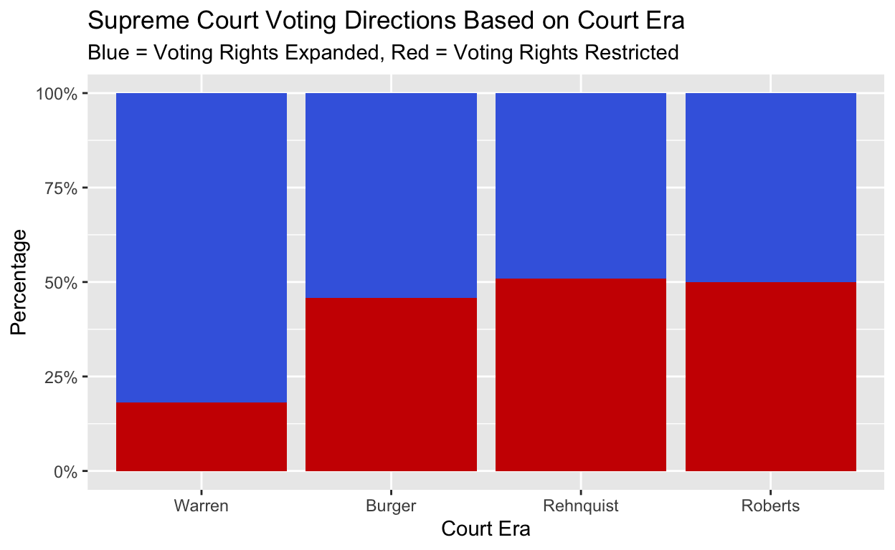

PS270 Final Project
The Voting Rights Act of 1965 was signed into law by President Lyndon B. Johnson, with the aim of providing direct federal intervention for African Americans to be able to vote, as well as banned tactics that had long been used to keep them from voting. This was a huge expansion of voting rights for Americans, as it aimed at stopping voter suppression that had taken place since the U.S. had been founded. Since 1969, 14 of the 18 justices appointed have been selected by Republican presidents, making them likely to follow the opinions of their appointees, some of which may include limiting access to voting. Currently, the Supreme Court has a 6-3 divide, with the majority leaning conservative. Since the Supreme Court is the most influential court in the United States and it’s decisions affect everyone who lives there, it’s important to know how their actions have influenced laws and practices. Voting is one of the most fundamental rights of a Democracy, and it’s important to know how Americans voting rights are being affected as a whole. We’re asking the question, has the U.S. Supreme Court expanded or limited access to voting since the passing of the Voting Rights Act of 1965?
The data used for this analysis comes from the Supreme Court Database from Washington University Law School in St. Louis, which contains over 200 pieces of information from each case the court has heard between the 1791 and 2024 terms. In this case, this data specifically comes from the MODERN database, which includes information from the years 1945 to 2024.
Our analysis is a longitudinal study, because we are looking at data from Supreme Court cases regarding voting across a long period of time. The explanatory variable is the court era, in which each era is decided by the judge that is the Chief Justice. Since 1965, the court eras have included the Warren court, the Burger court, the Rehnquist court, and the Roberts court, which is the era the Supreme Court is currently in. From this, the outcome variable is the outcome of the case, on which we will base whether or not voting access was expanded or restricted. This will be measured by the decisionDirection variable, which notes whether the court voted conservatively, liberally, or their decision was unspecifiable.
When answering this question, the null hypothesis is that the probability of a Liberal ruling has remained constant across all court eras. The alternative hypothesis is that the probability of a Liberal ruling has changed depending on which era the court is in. If the Liberal rulings remain constant across the court eras we’re observing, we’ll fail to reject the null hypothesis. Otherwise, we may reject the null hypothesis and accept the alternative.
Here are the first several rows of our cleaned dataset.
| year | dateDecision | caseName | chief | decisionDirection | ideology |
|---|---|---|---|---|---|
| 1966 | 12/12/1966 | FORTSON, SECRETARY OF STATE OF GEORGIA v. MORRIS et al. | Warren | 1 | Conservative |
| 1966 | 1/9/1967 | SWANN et al. v. ADAMS, SECRETARY OF STATE OF FLORIDA, et al. | Warren | 2 | Liberal |
| 1966 | 2/20/1967 | KILGARLIN et al. v. HILL, SECRETARY OF STATE OF TEXAS, et al. | Warren | 2 | Liberal |
| 1966 | 5/22/1967 | SAILORS et al. v. BOARD OF EDUCATION OF THE COUNTY OF KENT et al. | Warren | 1 | Conservative |
| 1966 | 5/22/1967 | DUSCH et al. v. DAVIS et al. | Warren | 1 | Conservative |
| 1967 | 12/4/1967 | LUCAS et al. v. RHODES, GOVERNOR OF OHIO, et al. | Warren | 2 | Liberal |

Each bar graph represents a different court era since 1965, and compares the number of Conservative and Liberal decisions made in cases about voting for each era. This shows that, overall, the Warren and Burger courts have expanded voting rights more than they restricted them, since their decisions trend in a Liberal direction. The Rehnquist and Roberts courts, overall, voted to restrict voting rights more than expand them, overall, but their Conservative decisions aren’t much higher than their Liberal ones. This shows that the Supreme Court has expanded voting rights, as they’ve made more Liberal decisions than Conservative ones since the passage of the Voting Rights Act of 1965.
This regression analysis predicts the direction of a case’s decision based on two variables, the specific issue of a case and the era of the court the case took place in. The issue column in the cases dataset contains three unique variables. Issue 20010 related to any case that falls under voting. Issue 20020 deals specifically with the Voting Rights Act of 1965 and any proposed amendments to it. Issue 20090 deals with reapportionment.
| term | estimate | std.error | statistic | p.value |
|---|---|---|---|---|
| (Intercept) | 0.173 | 0.130 | 1.333 | 0.184 |
| issue20020 | -0.149 | 0.100 | -1.485 | 0.139 |
| issue20090 | 0.084 | 0.098 | 0.851 | 0.396 |
| chiefBurger | 0.293 | 0.119 | 2.458 | 0.015 |
| chiefRehnquist | 0.368 | 0.123 | 2.994 | 0.003 |
| chiefRoberts | 0.360 | 0.134 | 2.684 | 0.008 |
Since issue 20010 is classified as “General Voting”, it is a good baseline to compare our other variables against. The model predicts that for cases regarding 20010 during the Warren court have a 0.173 probability of having a Liberal ruling. While the baseline probability for the Warren era may seem low (17.3%), the significant positive coefficients for the following court eras indicated an increase in Liberal decisions compared to the baseline. Holding the era constant, we can see that cases regarding issue 20020 are 14.9 percentage points less likely to have a Liberal ruling than issue 20010, and cases regarding issue 20090 are 8.4 percentage points more likely to hold a Liberal ruling. Compared to the Warren court, the Burger court is 29.3 percentage points more likely, the Rehnquist court is 36.8 percentage points more likely, and the Roberts court is 36.0 percentage points more likely to make a Liberal ruling on a case.
For the purpose of this analysis, \(\alpha = 0.05\). Issue is not a strong predictor of which direction a case will go, because the p-values, which are 0.139 and 0.396, respectively, are not statistically significant, as they are all above 0.05. This means that issue type is not associated with a strong change in the probability of a Liberal ruling. The court eras show a different result. The Burger court has a p-value of 0.015, the Rehnquist court has a p-value of 0.003, and the Roberts court has a p-value of 0.008, all of which are less than 0.05, making them statistically significant. From the analysis, we can see that Chief Justice is a stronger predictor of which direction a case decision will go in than issue type is.
While the data visualization shows that more recent courts have made slightly more Conservative decisions, in the first regression model when we control for legal issues using a regression model, we find a positive shift in the probability of Liberal rulings during the Rehnquist and Roberts eras compared to the Warren era. This means that we can reject the null hypothesis, since the era of the court does affect the probability of a Liberal ruling.
One issue with this analysis is that the Supreme Court handpicks the cases they hear, often choosing the cases that are the most extreme or controversial. This creates selection bias, as the justices are not hearing every case that deals with the restriction or expansion of voting rights. The lawType column of the data set records the legal provisions considered by the court when hearing the case, and measures them based on whether they were challenges to the Constitution, court rules, state laws, federal statutes, infrequently litigated statutes, cases with no legal provision, or other for cases that don’t apply to any of these classifications. This analysis will predict the direction of a case’s decision, using issue type and the interaction between the court era and the law type.
| term | estimate | std.error | statistic | p.value |
|---|---|---|---|---|
| (Intercept) | 1.898 | 0.412 | 4.607 | 0.000 |
| issue20020 | 0.093 | 0.119 | 0.784 | 0.434 |
| issue20090 | -0.102 | 0.107 | -0.961 | 0.338 |
| chiefBurger | -0.578 | 0.466 | -1.241 | 0.216 |
| chiefRehnquist | -0.529 | 0.435 | -1.216 | 0.226 |
| chiefRoberts | -0.213 | 0.446 | -0.478 | 0.633 |
| lawType | -0.047 | 0.184 | -0.257 | 0.797 |
| chiefBurger:lawType | 0.154 | 0.206 | 0.747 | 0.456 |
| chiefRehnquist:lawType | 0.095 | 0.190 | 0.499 | 0.618 |
| chiefRoberts:lawType | -0.013 | 0.192 | -0.069 | 0.945 |
The model shows that for all 3 interaction terms, the p-values are 0.456, 0.618, and 0.945, respectively, which is larger than the chosen parameter of 0.05, meaning they are not statistically significant. This means that the court is not “Liberal” on easier statutory cases and “Conservative” on Constitutional ones, but instead that it’s behavior appears consistent regardless of the lawType. This suggests that slight ideological shifts in different court eras are because of judicial philosophy, not simply the court picking more “extreme” cases.
Both the data visualization and regression analyses show that since 1965, the Supreme Court has done more to expand voting rights than restrict them, and that the era of the court does affect the probability of a Liberal decision for cases regarding voting. One limitation of this analysis is that it only measures the probability of a Liberal ruling based on court era for the Supreme Court, not state or lower courts. Other courts may not have the probability of a Liberal ruling change based on changes in judges or court eras, so this trend may be specific to the Supreme Court. Potential confounding variables might be the Voting Rights Act itself, which was changed in 1970, 1975, 1982, and 2006. This means that a Liberal ruling in 1966 is based off a different law than a ruling 2024. This means that eras are correlated with different versions of the law, so we may just be seeing the Supreme Court reacting to Congress’ new decision, not their own judicial preferences. While we can’t control for every law change, the regression model including the interaction of lawType with court era was a way to make sure that the “type” of law wasn’t the only thing driving their decisions.
With more time, a more comprehensive analysis of all court cases related to voting could be made, that analyzes whether or not the probability of a Liberal decision changes greatly over time.
library(tidyverse)
library(broom)
library(knitr)
cases <- read_csv("SCDB_2025_01_caseCentered_Vote.csv")
cases <- cases |> mutate(year = term) |>
select(year, caseId, dateDecision, decisionType, naturalCourt, chief, docket, caseName,
caseDisposition, caseDispositionUnusual, partyWinning, voteUnclear, issue, issueArea,
decisionType, decisionDirection, authorityDecision1, authorityDecision2, lawType, lawSupp,
splitVote, majVotes, minVotes)
voting_list <- c(20010, 20020, 20090)
cases <- cases |> filter(year > 1965, issue == "20010" | issue == "20020" | issue == "20090")
cases <- cases |> distinct(caseName, .keep_all = TRUE)
cases <- cases |> drop_na(decisionDirection) |>
filter(decisionDirection == 1 | decisionDirection == 2) |>
mutate(ideology = if_else(decisionDirection == 1, "Conservative", "Liberal"),
chief = factor(chief, levels = c("Warren", "Burger", "Rehnquist", "Roberts")))
cases <- cases |> mutate(ideologyBinary = if_else(decisionDirection == 1, 1, 0))
head(cases) |> select(year, dateDecision, caseName, chief, decisionDirection, ideology) |>
knitr::kable()
plot_data <- cases |>
filter(!is.na(ideologyBinary)) |>
mutate(ideology_label = factor(ideologyBinary, levels = c(0, 1),
labels = c("Liberal", "Conservative")))
plot_data |> ggplot(aes(x = ideology_label, fill = ideology_label)) +
geom_bar() + theme_minimal() +
labs(title = "Decision Direction Count Based on Court Rule",
x = "Ideology", y = "Count of Cases") +
facet_wrap(~chief, ncol = 2) +
scale_fill_manual(values = c("Conservative" = "red3", "Liberal" = "royalblue")) +
theme(legend.position = "none",
strip.text = element_text(size = 12, face = "bold"))
cases$issue <- factor(cases$issue)
fit <- lm(ideologyBinary ~ issue + chief, data = cases)
cleaned_fit <- tidy(fit)
cleaned_fit |> knitr::kable(digits = 3)
fit_interaction <- lm(decisionDirection ~ issue + chief * lawType, data = cases)
cleaned_interaction <- tidy(fit_interaction)
cleaned_interaction |> knitr::kable(digits = 3)